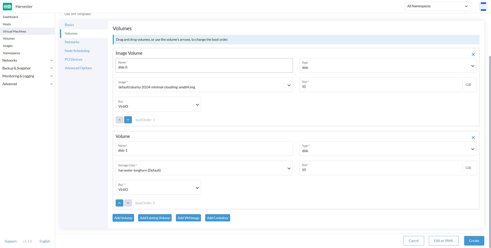

|
Dieses Dokument wurde mithilfe automatisierter maschineller Übersetzungstechnologie übersetzt. Wir bemühen uns um korrekte Übersetzungen, übernehmen jedoch keine Gewähr für die Vollständigkeit, Richtigkeit oder Zuverlässigkeit der übersetzten Inhalte. Im Falle von Abweichungen ist die englische Originalversion maßgebend und stellt den verbindlichen Text dar. |
Erstellen Sie eine virtuelle Maschine
So erstellen Sie eine virtuelle Maschine
-
UI
-
API
-
Terraform
Sie können eine oder mehrere virtuelle Maschinen auf der Seite Virtuelle Maschinen erstellen.
|
Bitte beziehen Sie sich auf diese Seite, um Windows-virtuelle Maschinen zu erstellen. |
-
Wählen Sie die Option, um entweder eine einzelne oder mehrere virtuelle Maschineninstanzen zu erstellen.
-
Wählen Sie den Namespace Ihrer virtuellen Maschinen aus, nur der
harvester-publicNamespace ist für alle Benutzer sichtbar. -
Der VM-Name ist ein Pflichtfeld.
-
(Optional) VM-Vorlage ist optional, Sie können die Vorlage
iso-image,raw-imageoderwindows-iso-imagewählen, um die Erstellung Ihrer virtuellen Maschineninstanz zu beschleunigen. -
Konfigurieren Sie auf der Registerkarte Grundlagen die folgenden Einstellungen:
-
CPU und Arbeitsspeicher: Sie können maximal 254 vCPUs zuweisen. Als bewährte Methode stellen Sie sicher, dass die Anzahl der vCPUs, die jeder virtuellen Maschine zugewiesen sind, die Anzahl der verfügbaren physischen Prozessor-Threads auf dem Host nicht überschreitet. Wenn nicht erwartet wird, dass virtuelle Maschinen die zugewiesenen Ressourcen die meiste Zeit vollständig nutzen, können Sie die Einstellung
overcommit-configverwenden, um die physische Ressourcenzuweisung zu optimieren. -
SSHKey: Wählen Sie SSH-Schlüssel aus oder laden Sie neue Schlüssel hoch.
-
-
Wählen Sie ein benutzerdefiniertes VM-Image auf der Registerkarte Volumes aus. Die Standardfestplatte wird die [Root]-Festplatte sein. Sie können der virtuellen Maschine weitere Festplatten hinzufügen.
-
Um Netzwerke zu konfigurieren, gehen Sie zur Registerkarte Netzwerke.
-
Das Management-Netzwerk wird standardmäßig hinzugefügt, Sie können es entfernen, wenn das VLAN-Netzwerk konfiguriert ist.
-
Sie können auch zusätzliche Netzwerke zu den virtuellen Maschinen über VLAN-Netzwerke hinzufügen. Sie können die VLAN-Netzwerke zuerst im Erweiterten → Netzwerken konfigurieren.
Wenn die virtuelle Maschine eine Schnittstelle mit dem
mgmtNetzwerk und eine andere mit einem VLAN-Netzwerk verbunden hat, kann der Knoten möglicherweise diemgmtIP-Adresse der virtuellen Maschine nicht erreichen. Dieses Verbindungsproblem tritt auf, wenn das Gateway des anderen Netzwerks die Standardroute der virtuellen Maschine überschreibt, was zu einer Routing-Präferenz für das VLAN-Netzwerk für gesamten eingehenden und ausgehenden Datenverkehr führt, selbst für Datenverkehr, der für dasmgmtNetzwerk bestimmt ist. -
(Optional) Legen Sie Knotenaffinitätsregeln auf der Registerkarte Knotenplanung fest.
-
(Optional) Legen Sie Arbeitslastaffinitätsregeln auf der Registerkarte VM-Planung fest.
-
Erweiterte Optionen wie Ausführungsstrategie, Betriebssystemtyp und Cloud-Init-Daten sind optional. Sie können diese im Abschnitt Erweiterte Optionen konfigurieren, wenn zutreffend.

Um virtuelle Maschinen über die Kubernetes-API zu erstellen, erstellen Sie ein VirtualMachine Objekt.
+
apiVersion: kubevirt.io/v1
kind: VirtualMachine
metadata:
name: new-vm
namespace: default
spec:
runStrategy: RerunOnFailure
template:
spec:
domain:
cpu:
cores: 2
sockets: 1
threads: 1
memory: "3996Mi"
devices:
disks: []
interfaces:
- name: default
model: virtio
masquerade: {}
machine:
type: q35
resources:
requests:
cpu: "125m"
memory: "2730Mi"
limits:
cpu: 2
memory: "4Gi"
networks:
- name: default
pod: {}Weitere Informationen finden Sie in der API-Referenz.
Um eine virtuelle Maschine mit dem [Harvester Terraform Provider](https://registry.terraform.io/providers/harvester/harvester/latest) zu erstellen, definieren Sie einen harvester_virtualmachine Ressourcenblock:
resource "harvester_virtualmachine" "opensuse154" {
name = "opensuse154"
namespace = "default"
restart_after_update = true
cpu = 2
memory = "2Gi"
run_strategy = "RerunOnFailure"
hostname = "opensuse154"
machine_type = "q35"
ssh_keys = [
harvester_ssh_key.mysshkey.id
]
network_interface {
name = "nic-1"
network_name = harvester_network.cluster-vlan1.id
wait_for_lease = true
}
disk {
name = "rootdisk"
type = "disk"
size = "10Gi"
bus = "virtio"
boot_order = 1
image = harvester_image.opensuse154.id
auto_delete = true
}
cloudinit {
user_data_secret_name = harvester_cloudinit_secret.cloud-config-opensuse154.name
network_data_secret_name = harvester_cloudinit_secret.cloud-config-opensuse154.name
}
}Volumes
Sie können ein oder mehrere zusätzliche Volumes über die Volumes-Registerkarte hinzufügen. Standardmäßig ist die erste Festplatte die [Root]-Festplatte. Sie können die Bootreihenfolge ändern, indem Sie Volumes ziehen und ablegen oder die Pfeiltasten verwenden.
Eine Festplatte kann über die folgenden Typen zugänglich gemacht werden:
| type | description |
|---|---|
Festplatte |
Dieser Typ stellt das Volume als gewöhnliche Festplatte für die virtuelle Maschine bereit. |
cd-rom |
Dieser Typ stellt das Volume als CD-ROM-Laufwerk für die virtuelle Maschine bereit. Es ist standardmäßig schreibgeschützt. |
Die StorageClass eines Volumes kann beim Hinzufügen eines neuen leeren Volumes angegeben werden; für andere Volumes (wie virtuelle Maschinenbilder) wird die StorageClass während der Erstellung des Bildes definiert.
Wenn Sie externen Speicher verwenden, stellen Sie sicher, dass die richtige StorageClass und Volume Mode ausgewählt sind. Zum Beispiel muss ein Volume mit der nfs-csi StorageClass den Filesystem Volume-Modus verwenden.
|
wichtig
Beim Erstellen von Volumes aus einem virtuellen Maschinen-Image stellen Sie sicher, dass die Volumengröße größer oder gleich der Bildgröße ist. Das Volume kann beschädigt werden, wenn die konfigurierte Volumengröße kleiner ist als die Größe des zugrunde liegenden Images. Dies ist besonders wichtig für qcow2-Images, da die virtuelle Größe typischerweise größer ist als die physische Größe. Standardmäßig setzt SUSE Virtualization die Volumengröße auf entweder 10 GiB oder die virtuelle Größe des virtuellen Maschinen-Images, je nachdem, was größer ist. |

Hinzufügen einer Container-Festplatte
Eine Container-Festplatte ist ein temporäres Speichervolumen, das beliebig vielen virtuellen Maschinen zugewiesen werden kann und die Möglichkeit bietet, virtuelle Maschinen-Festplatten im Container-Image-Registry zu speichern und zu verteilen. Eine Container-Festplatte ist:
-
Ein ideales Werkzeug, um eine große Anzahl von virtuellen Maschinen-Workloads zu replizieren oder Maschinen-Treiber zu injizieren, die keine persistenten Daten benötigen. Temporäre Volumes sind für virtuelle Maschinen konzipiert, die mehr Speicher benötigen, sich jedoch nicht darum kümmern, ob diese Daten persistent über Neustarts der virtuellen Maschine gespeichert werden oder ob nur einige schreibgeschützte Eingabedaten in Dateien vorhanden sind, wie z.B. Konfigurationsdaten oder geheime Schlüssel.
-
Keine gute Lösung für Arbeitslasten, die persistente [Root]-Festplatten über Neustarts der virtuellen Maschinen erfordern.
Eine Container-Festplatte wird hinzugefügt, wenn eine virtuelle Maschine erstellt wird, indem ein Docker-Image bereitgestellt wird. Beim Erstellen einer virtuellen Maschine befolgen Sie diese Schritte:
-
Gehen Sie zur Registerkarte Volumes.
-
Wählen Sie Container hinzufügen.

-
Geben Sie einen Namen für die Container-Festplatte ein.
-
Wählen Sie einen Datenträger Typ.
-
Fügen Sie ein Docker-Image hinzu.
-
Ein Disk-Image im Format qcow2 oder raw muss in das
/diskVerzeichnis gelegt werden. -
Die Formate Raw und qcow2 werden unterstützt, aber qcow2 wird empfohlen, um die Größe des Container-Images zu reduzieren. Wenn Sie ein nicht unterstütztes Bildformat verwenden, bleibt die virtuelle Maschine in einem
RunningZustand hängen. -
Eine Container-Festplatte ermöglicht es Ihnen auch, Festplatten-Images im
/diskVerzeichnis zu speichern. Ein Beispiel für die Erstellung eines solchen Container-Images finden Sie hier.
-
-
Wählen Sie einen Bus-Typ.

Netzwerke
Sie können wählen, sowohl das management network als auch das VLAN network über die Registerkarte Networks zu Ihren virtuellen Maschinen hinzuzufügen; das management network ist optional, wenn Sie das VLAN-Netzwerk konfiguriert haben.
Netzwerkschnittstellen werden über das Type Feld konfiguriert. Sie beschreiben die Eigenschaften der virtuellen Schnittstellen, die im Gastbetriebssystem sichtbar sind:
| type | description |
|---|---|
Bridge |
Verbinden Sie sich über eine Linux-Bridge |
masquerade |
Verbinden Sie sich über iptables-Regeln, um den Verkehr zu NATen |
Management-Netzwerk
Ein Management-Netzwerk stellt die standardmäßige virtuelle Maschinen eth0-Schnittstelle dar, die von der Cluster-Netzwerklösung konfiguriert wird, die in jeder virtuellen Maschine vorhanden ist.
Standardmäßig sind virtuelle Maschinen über das Management-Netzwerk innerhalb der Cluster-Knoten zugänglich.
Sekundäres Netzwerk
Es ist auch möglich, virtuelle Maschinen über zusätzliche Netzwerke mit den integrierten VLAN-Netzwerken von SUSE Virtualization zu verbinden.
Im Bridge-VLAN sind virtuelle Maschinen über eine Linux bridge-Bridge mit dem Host-Netzwerk verbunden. Die IPv4-Adresse des Netzwerks wird der virtuellen Maschine über DHCPv4 zugewiesen. Die virtuelle Maschine sollte so konfiguriert werden, dass sie DHCP verwendet, um IPv4-Adressen zu erhalten.
Knotenplanung
Node Scheduling ermöglicht es Ihnen, einzuschränken, auf welchen Knoten Ihre virtuellen Maschinen basierend auf Knoten-Labels geplant werden können.

Sie können wählen, virtuelle Maschinen auf Folgendem auszuführen:
-
Jeden verfügbaren Knoten
-
Einen bestimmten Knoten
Im folgenden Beispiel hat der Zielknoten den Hostnamen harv21.
nodeSelector: kubernetes.io/hostname: harv21
|
Die virtuelle Maschine kann nicht-migrierbar sein, wenn Sie die Planung auf einen bestimmten Knoten beschränken. |
-
Knoten, die den Planungsregeln entsprechen
Sie gewinnen mehr Flexibilität, indem Sie eine virtuelle Maschine auf einer Gruppe von Knoten planen. Im folgenden Beispiel kann die virtuelle Maschine auf Knoten mit einem bestimmten Label geplant werden. Der Schlüssel ist harvesterhci.io/group und der Wert kann entweder engineering oder qa sein.
spec:
affinity:
nodeAffinity:
requiredDuringSchedulingIgnoredDuringExecution:
nodeSelectorTerms:
- matchExpressions:
- key: harvesterhci.io/group
operator: In
values:
- engineering
- qa
Für weitere Informationen siehe Kubernetes Node Affinity-Dokumentation.
Planung von virtuellen Maschinen
Die Planung von virtuellen Maschinen ermöglicht es Ihnen, einzuschränken, auf welchen Knoten Ihre virtuellen Maschinen basierend auf den Labels von Workloads (virtuellen Maschinen und Pods), die bereits auf diesen Knoten ausgeführt werden, geplant werden können, anstatt auf den Knoten-Labels.
Zum Beispiel können Sie Required mit Affinity kombinieren, um den Scheduler anzuweisen, virtuelle Maschinen von zwei Diensten in derselben Zone zu platzieren, was die Kommunikationseffizienz erhöht. Ebenso kann die Verwendung von Preferred mit Anti-Affinity helfen, virtuelle Maschinen eines bestimmten Dienstes über mehrere Zonen zu verteilen, um die Verfügbarkeit zu erhöhen.
Siehe die Kubernetes Pod Affinity und Anti-Affinity Dokumentation für weitere Details.
|
Während der Pre-Drain-Phase des Upgrades kann SUSE Virtualization möglicherweise keine virtuellen Maschinen live migrieren, da die strengen Anti-Affinitätsregeln nicht erfüllt sind. Wenn dies geschieht, fährt SUSE Virtualization diese virtuellen Maschinen automatisch herunter, um das Upgrade nicht zu blockieren und zu verhindern, dass der Prozess unsicher neu gestartet wird. |
Automatisch angewendete Affinitätsregeln
SUSE Virtualization kann bestimmte Affinitätsregeln automatisch anwenden, abhängig davon, wie eine virtuelle Maschine konfiguriert ist. Diese Regeln bestimmen, welche Knoten als Planungs- oder Migrationsziele in Frage kommen. Wenn keine anderen Knoten die Kriterien erfüllen, kann die virtuelle Maschine nicht geplant oder migriert werden.
Für weitere Informationen siehe Nicht planbare virtuelle Maschinen.
|
Der SUSE Virtualization Webhook stellt manuelle Änderungen an automatisch angewendeten Regeln wieder her. |
Verwandte Netzwerkkonzepte
Der allgemeine Prozess zur Einrichtung von Netzwerken für virtuelle Maschinen umfasst Folgendes:
-
Ein Cluster-Netzwerk und eine entsprechende Netzwerkkonfiguration werden erstellt. Nur Knoten, die durch die Netzwerkkonfiguration abgedeckt sind, richten die Netzwerkgeräte ein.
-
Ein VM-Netzwerk wird mit einer spezifischen VLAN-ID erstellt.
Im folgenden Beispiel werden Schritte unternommen, um ein Cluster-Netzwerk einzurichten und eine virtuelle Maschine zu definieren, die mit diesem Cluster-Netzwerk verbunden ist.
-
Ein Cluster-Netzwerk mit dem Namen
cn2wird erstellt. -
Eine Netzwerkkonfiguration mit dem Namen
cn2-vc1wird erstellt.cn2-vc1decktnode1undnode2ab. -
Ein VM-Netzwerk mit dem Namen
cn2-nad-100wird mit der VLAN-IDvlan id 100erstellt. -
Eine virtuelle Maschine mit dem Namen
VM vm1verbindet sich mit einem sekundären Netzwerk mit dem Namencn2-nad-100.
SUSE Virtualization stellt Folgendes sicher:
-
Der SUSE Virtualization Controller kennzeichnet automatisch Kubernetes
nodeObjekte.kubectl get node node1 -oyaml ... metadata: labels: network.harvesterhci.io/cn2: "true" network.harvesterhci.io/mgmt: "true" network.harvesterhci.io/vlanconfig: cn2-vc1 ... -
Der SUSE Virtualization Webhook aktualisiert automatisch das
virtualmachineObjekt.spec: template: spec: affinity: nodeAffinity: requiredDuringSchedulingIgnoredDuringExecution: nodeSelectorTerms: - matchExpressions: - key: network.harvesterhci.io/cn2 operator: In values: - 'true' -
Die virtuelle Maschine ist nur für
node1odernode2geplant.
|
SUSE Virtualization wendet mehrere Affinitätsregeln an, wenn eine virtuelle Maschine mit mehreren VM-Netzwerken verbunden ist, die von mehreren Cluster-Netzwerken unterstützt werden. Die angewendeten Regeln bestimmen gemeinsam die Knoten, die als Planungs- oder Migrationsziele in Frage kommen. Es werden keine Affinitätsregeln angewendet, wenn eine virtuelle Maschine mit VM-Netzwerken verbunden ist, die von |
| Die virtuelle Maschine ist nicht migrierbar, wenn es nur einen Knoten im Cluster-Netzwerk gibt. |
Verwandte CPU-Pinning-Konzepte
Wenn Sie den CPU-Manager auf Knoten aktivieren, wendet SUSE Virtualization das folgende Label auf verwandte node Objekte an.
...
metadata:
labels:
cpumanager: "true"
...Wenn Sie CPU-Pinning während der Erstellung der virtuellen Maschine aktivieren, wendet SUSE Virtualization eine Affinitätsregel an, die sicherstellt, dass die virtuelle Maschine nur auf Knoten geplant wird, auf denen der CPU-Manager aktiviert ist.
spec:
template:
spec:
affinity:
nodeAffinity:
requiredDuringSchedulingIgnoredDuringExecution:
nodeSelectorTerms:
- matchExpressions:
- key: cpumanager
operator: In
values:
- 'true'| Die virtuelle Maschine ist nicht migrierbar, wenn der CPU Manager nur auf einem Knoten aktiviert ist. |
Annotationen
SUSE Virtualization ermöglicht es Ihnen, benutzerdefinierte Metadaten an virtuellen Maschinen mithilfe von Annotationen anzuhängen. Diese Schlüssel-Wert-Paare ermöglichen erweiterte Funktionen oder Verhaltensweisen, ohne dass Änderungen an der Kernel-Konfiguration der virtuellen Maschine vorgenommen werden müssen.
Sie können die harvesterhci.io/custom-ip Annotation verwenden, um eine IP-Adresse auf der SUSE Virtualization UI für Anzeigezwecke festzulegen. Dies ist nützlich, wenn die virtuelle Maschine ihre IP-Adresse aufgrund eines fehlenden qemu-guest-agent oder aus anderen Gründen nicht melden kann.
Erweiterte Optionen
Ausführungsstrategie
SUSE Virtualization verwendete zuvor das Running (ein boolescher Datentyp) Feld, um zu bestimmen, ob die Instanz der virtuellen Maschine laufen sollte. Ein einfacher boolescher Datentyp ist jedoch nicht immer ausreichend, um das gewünschte Verhalten des Benutzers vollständig zu beschreiben. In einigen Fällen möchte der Benutzer beispielsweise in der Lage sein, die Instanz von innerhalb der virtuellen Maschine herunterzufahren. Wenn das running Feld verwendet wird, wird die virtuelle Maschine sofort neu gestartet.
Um die Szenarioanforderungen von mehr Benutzern zu erfüllen, wird das RunStrategy Feld eingeführt. Dies ist gegenseitig ausschließend mit Running, da sich ihre Bedingungen teilweise überschneiden. Derzeit sind vier RunStrategies definiert:
-
Immer: Die virtuelle Maschineninstanz wird immer existieren. Wenn die virtuelle Maschineninstanz abstürzt, wird eine neue erstellt. Dies ist dasselbe Verhalten wie
Running: true. -
RerunOnFailure (Standard): Wenn die vorherige Instanz in einem Fehlerzustand fehlgeschlagen ist, wird eine virtuelle Maschineninstanz neu gestartet. Wenn der Gast erfolgreich gestoppt wird (z. B. von innen heruntergefahren), wird er nicht neu erstellt.
-
Manuell: Die Anwesenheit oder Abwesenheit einer virtuellen Maschineninstanz wird nur durch die
start/stop/restartVirtualMachine-Aktionen gesteuert. -
Beenden: Es wird keine virtuelle Maschineninstanz geben. Wenn der Gast bereits läuft, wird er gestoppt. Dies ist dasselbe Verhalten wie
Running: false.
Cloud-Konfiguration
SUSE Virtualization unterstützt die Möglichkeit, ein Startskript einer virtuellen Maschineninstanz zuzuweisen, das automatisch ausgeführt wird, wenn die virtuelle Maschine initialisiert wird.
Diese Skripte werden häufig verwendet, um die Injektion von Benutzern und SSH-Schlüsseln in virtuelle Maschinen zu automatisieren, um den Remotezugriff auf die Maschine zu ermöglichen. Zum Beispiel kann ein Startskript verwendet werden, um Anmeldeinformationen in eine virtuelle Maschine zu injizieren, die es einem Ansible-Job, der auf einem Remote-Host läuft, ermöglicht, auf die virtuelle Maschine zuzugreifen und sie bereitzustellen.
Cloud-init
Cloud-init ist ein weit verbreitetes Projekt und die branchenübliche Multi-Distribution-Methode zur plattformübergreifenden Initialisierung von Cloud-Instanzen. Es wird von allen großen Cloud-Image-Anbietern wie SUSE, Redhat, Ubuntu usw. unterstützt; cloud-init hat sich als die De-facto-Methode zur Bereitstellung von Startskripten für virtuelle Maschinen etabliert.
SUSE Virtualization unterstützt das Einfügen Ihrer benutzerdefinierten Cloud-Init-Startskripte in eine virtuelle Maschineninstanz durch die Verwendung eines temporären Datenträgers. Virtuelle Maschinen mit dem installierten cloud-init-Paket erkennen den ephemeren Datenträger und führen benutzerspezifische Benutzerdaten- und Netzwerkdaten-Skripte beim Booten aus.
Beispiel für die Passwortkonfiguration des Standardbenutzers:
#cloud-config
password: password
chpasswd: { expire: False }
ssh_pwauth: TrueBeispiel für die Netzwerkdatenkonfiguration mit DHCP:
network:
version: 1
config:
- type: physical
name: eth0
subnets:
- type: dhcp
- type: physical
name: eth1
subnets:
- type: dhcpSie können auch die Advanced > Cloud Config Templates-Funktion verwenden, um eine vordefinierte Cloud-Init-Konfiguration für die virtuelle Maschine zu erstellen.
|
Die Netzwerkkonfiguration einer virtuellen Maschine, die eine Ubuntu-Version später als 16.04 ausführt, wird standardmäßig wahrscheinlich von Die wiederhergestellte virtuelle Maschine behält die Maschinen-ID der ursprünglichen virtuellen Maschine. Wenn |
Installation des QEMU-Gastagenten
Der QEMU-Gastagent ist ein Daemon, der auf der virtuellen Maschineninstanz läuft und Informationen über die virtuelle Maschine, Benutzer, Dateisysteme und sekundäre Netzwerke an den Host übermittelt.
Das Install guest agent-Kontrollkästchen ist standardmäßig aktiviert, wenn eine neue virtuelle Maschine erstellt wird.

|
Wenn Ihr Betriebssystem openSUSE ist und die Version kleiner als 15.3 ist, ersetzen Sie bitte |
TPM Device
Trusted Platform Module (TPM) ist ein Kryptoprozessor, der Hardware mit kryptografischen Schlüsseln sichert.
Laut Windows 11-Anforderungen ist das TPM 2.0-Gerät eine zwingende Voraussetzung für Windows 11.
Im SUSE Virtualization-UI können Sie ein emuliertes TPM 2.0-Gerät zu einer virtuellen Maschine hinzufügen, indem Sie das Enable TPM-Kontrollkästchen im Tab Erweiterte Optionen aktivieren.
|
Derzeit werden nur nicht persistente vTPMs unterstützt, und ihr Zustand wird nach jedem Herunterfahren der virtuellen Maschine gelöscht. Daher sollte Bitlocker nicht aktiviert werden. |
Einmaliger Boot für die ISO-Installation
Beim Erstellen einer virtuellen Maschine, die von CD-ROM booten soll, können Sie die Option bootOrder verwenden, damit das Betriebssystem während der Bildinstallation von der CD-ROM booten kann und nach Abschluss der Installation von der Festplatte startet, ohne die CD-ROM auszuhängen.
Das folgende Beispiel beschreibt, wie man ein ISO-Image mit openSUSE Leap 15.4 installiert:
-
Klicken Sie auf Images in der linken Seitenleiste und laden Sie das openSUSE Leap 15.4 ISO-Image herunter.
-
Klicken Sie auf Virtual Machines in der linken Seitenleiste und erstellen Sie dann eine virtuelle Maschine. Sie müssen die grundlegenden Konfigurationen dieser virtuellen Maschine ausfüllen.
-
Klicken Sie auf die Registerkarte Volumes, wählen Sie im Feld Image das in Schritt 1 heruntergeladene Image aus und stellen Sie sicher, dass Type
cd-romist. -
Klicken Sie auf Add Volume und wählen Sie eine vorhandene StorageClass aus.
-
Ziehen Sie Volume an die Spitze von Image Volume wie folgt. Auf diese Weise wird die bootOrder von Volume
1sein.

-
Klicken Sie auf Erstellen.
-
Öffnen Sie die virtuelle Maschine web-vnc, die Sie gerade erstellt haben, und folgen Sie den Anweisungen des Installationsprogramms.
-
Nach Abschluss der Installation starten Sie die virtuelle Maschine gemäß den Anweisungen des Betriebssystems neu (Sie können das Installationsmedium nach dem Booten des Systems entfernen).
-
Nachdem die virtuelle Maschine neu gestartet wurde, bootet sie automatisch vom Festplattenvolume und startet das Betriebssystem.